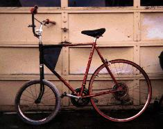
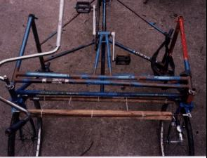

Multi-track rides feel quite odd when one is accustomed to a single-track vehicle, and for this reason the intrepid builder is encouraged to give them a try.
There are a few ways to go about making tricycles. A delta trike has two wheels in back, and a tadpole trike has two in front. They needn't be symmetric; sidecar bikes have two inline wheels and an outrigger. None of the wheels even need to be lined up frontwise or sidewise, so the third wheel can be put anywhere between a delta or tadpole placement. A popular ladies' trike style in the first golden era was to have one large driving wheel on one side, and two steering wheels on the other side, one front and back. One lever controlled both steering wheels, which would twist in opposite directions.
The steering method is another difference to keep in mind, although these variations aren't limited to multi-wheeled vehicles. Direct steering is like that on a normal bicycle - the handlebars are rigidly connected to a single steer tube which the steering wheel or wheels rotates around. There can be more than one wheel, such as on a Jakarta rickshaw, but their position relative to each other around the headtube will be fixed. Think of the two nuts on a fork - the line between each of them and the headtube axis never changes as it rotates. With indirect steering, the handlebars move a linkage which moves the wheels. This is usually an assembly of rods or cables which are connected by some hinges with one degree of freedom. When using indirect steering with multiple asymmetric steering wheels, be prepared to know more than we do.
What every trike (and bike) does need is for all the wheels to be able to turn at separate rates. Otherwise, one wheel will drag during turns. If there is more than one drive wheel, therefore, they will have to use some kind of differential.
The greatest thrill from being on a trike comes from the fact that it rides completely different from a bike. On a bicycle, when a turn is executed, the bike starts to move in a different direction, while inertia keeps the pilot moving in a straight line. If the bicycle does not pull the pilot around the corner with it, the whole mess won't turn together. Instead, the straight path of the pilot will pull the bike over towards the outside of the turn. The bike doesn't provide any lateral support, so the only way to avoid a crash after the bike has begun flopping towards the outside is to yank the bike back under the pilot, and the only way to do this is to reduce the turning radius.
Of course, this rarely happens, because every bicyclist has learned that by leaning into turns, the bike is kept under the combined vector of the forces of inertia and gravity which is pushing the pilot, and successfully pulls everything around the turn. Usually, the proper lean comes without thought, but if it doesn't, there are all sorts of fun things that can happen. If the bike is leaning too far inward, often because of a skid, the pilot won't be supported and will fall ("lowside"). If the bike suddenly isn't leaning far enough for the current turn radius, often because a skidding wheel regains traction, the pilot will be catapulted into the air when the bike acts like a polevaulter's pole (the deadly "highside").
Anyway, a trike isn't a single-track vehicle, and all the rules are different. The only thing keeping the trike under the pilot is a wide wheelbase; if the vector of the force acting on the center of gravity of everything involved points outside of the wheels, the vehicle will start to flop to the outside of the turn, as above, and the inside wheel will leave the ground. This is the opposite of what one expects from a bicycle. Trike tires also get yanked to the side, and there is a lot of scrubbing. Tilting the machine is very stressful for the wheel that stays on the ground, since it isn't made to deal with a sideways force.
An asymmetrical trike is a little weirder because it will lean differently in different directions. When it isn't kept stable by weight, it will have a great turn with the outrigger on the outside, and a terrible turn with the outrigger in.
With delta trikes, one has to figure out how to transmit power to a driving wheel. Sidecar hacks or other outrigger types are easy, though - just mount a new coasting wheel onto the frame. The easiest way to make a sidecar is to use two frames that are identical in geometry. Keep the frames aligned horizontally and vertically when you attach them together, and you'll ensure that the coaster wheel is aligned with the driving wheel. Then saw off what you don't want from the outrigger frame. The Hack uses the bottom bracket, chainstays, and downtube from a third frame in between the two, just to add more support for the floor panels. Put the sidecar on the curb side! Not only is this more polite to the passenger, but it makes riding much easier, since the lean caused by a crowned road is supported by the third wheel.
Tadpole trikes with direct steering can be made by affixing the front wheels to a boxlike assembly which does all of the turning. They can be made without modifying anything behind the head tube. They make great cargo carriers, because the two front wheels support the machine well during turns, rather than tending to dive as a delta trike does.
|  |
However, a tadpole trike with direct steering must have a perfectly vertical head tube. Any angle will cause the frame to want to lean during turns, and an angle towards the rear will make it want to lean in the wrong direction. The Cargo Trike has a box with dropouts (just slots sawed into angle iron, actually) which is bolted to the fork and handlebars, and the two parts were made in separate locations. One front wheel was put on the fork, and the frame was ridden to where the box was waiting for assembly. The fork and wheels bolt onto identical lengths of angle iron which are welded to the same plane of the box, so the headtube angle should have been been easy to figure out - just set the headtube with one wheel in the fork - but the angle is off by a about a degree. A better way might be to assemble the fork in the headtube, bolt everything to the box, and then weld the headtube to the frame. |
The cargo trike frame is attached to the fork by an axle which is slid through a pair of holes in two pieces of angle iron and bolted down. The space between the angle iron is filled with washers. The handlebar fittings come from a Wald basket, and tended to work loose until some threadlocking compound was used.
|
Indirect steering isn't a big deal. Just make sure that all of your steering angles and arms are the same, or at least close. Indirect steering with two steering wheels is a slightly bigger deal. Each steering wheel needs to move exactly the same, which means that the wheels, tires, forks, and headtube angles must be identical. Well, maybe if you're making a high-performance trike, but in reality, just pick two wheels and tires of the same size, and try for closeness with the forks. |
The steering linkage for the Platform Thing uses bearings connected by threaded steel rods. There are many other steering mechanisms out there, however, as well as cheaper ways to use pushrods. A bolt with a space created by locknuts which passes through a hole in a connector made of bar stock would work, but get the measurement right the first time! |
|
|
The bearings are bolted to arms made out of steel plates, two brazed to each fork, pointing straight forward and back. There are a few ideas about how to angle the arms on a steering linkage. Cars use Ackermann steering, in which lines extending the arms intersect on the back axle. We didn't know about that, but this trike only noticeably scrubs the wheels during the tightest possible turns, which aren't performed at speed, anyway. Two rods connect the wheels because a single rod tends to flex and cause the farther wheel to shimmy. That's also the reason behind the wooden dowels which are ziptied to the rods. If you look closely at the headtube, you can see a sawed off centerpull brake cable anchor with a hole in it, which is where the bearings were originally anchored. This hole eventually became ovalized, leading to more slop. |

Aligning everything together during construction wasn't as much of a hassle as it was for the Cargo Trike, because angles with respect to the ground weren't important, only angles relative to each other. Also, unlike the Cargo Trike, the trail can be adjusted by changing the relative sizes of the front and rear wheels. The first members were the two outermost frames. Only the headtubes needed to be well aligned. The frames were clamped into a bike stand and a vise, respectively, with each head tube perfectly vertical as measured repeatedly with a level. The frames were then connected with the frontmost tubes. The rest of the center portion had to be perpendicular with the line between these headtubes, but it could be tackled piece by piece. The front bottom bracket was first of these. The existing structure was placed so that the headtubes rested on a level surface, ensuring that a level bottom bracket would be aligned with them. The chainstays and seattube of the BB's frame were kept as structural members, and grinding the end of each chainstay bit by bit was an excellent way to make sure that it was aligned in the absence of a proper jig. The BB, by the way, is both reversed and upside down, so that it's facing the same way as it was in its earlier life. That way, the pedaling action doesn't tend to loosen any threads. This might not be strictly necessary, but it's nice.
The two remaining parts of the center line of the frame were then assembled, and welded to themselves and the rest of the frame all at once. Things were kept aligned here by tightly clamping a pair of two by fours to the structure with C-clamps and lots of zipties. Since each piece has a complete frame triangle in it, at two tubes of which were between the planks, this kept everything straight. The various supports were added as the need arose.
(Return to C.H.U.N.K. Technical Documentation)
| Copyright 2003 Megulon Five <megulon5@dclxvi.org>. |
|
This work is licensed under a Creative Commons License. | Last modified 12 September 1999. |